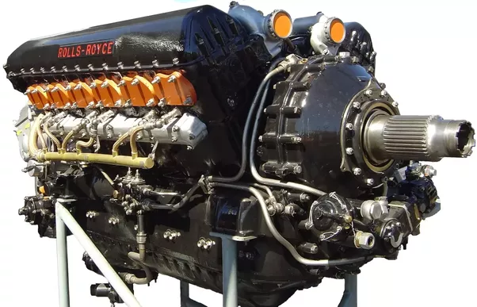

Rolls Royce Merlin
19 Październik 2018, Paweł

Rolls Royce Merlin (źródło:www.quora.com )
12-cylindrowy widlasty silnik tłokowy o układzie V12 60° zaprojektowany przez firmę Rolls-Royce i budowany w okresie II wojny światowej. Był to jeden z najlepszych ówczesnych widlastych silników lotniczych. Został wykorzystany do napędu wielu modeli samolotów. Silnik powstał jako prywatny projekt firmy Rolls-Royce, pod oznaczeniem PV-12. Jako pierwszy został wybrany jako napęd bombowca Fairey Battle, oblatanego w 1936 roku, co spowodowało skierowanie silnika do produkcji[1]. Kiedy w 1936 brytyjskie Ministerstwo Lotnicze ogłosiło konkurs na nowy myśliwiec, który rozwijałby prędkość 300 mil na godzinę (480 km/h), okazało się, że PV-12 był jedynym silnikiem mogącym zapewnić takie osiągi konstruowanym wtedy samolotom Hawker Hurricane i Supermarine Spitfire . W czasie wojny powstawały kolejne modele silnika, o coraz większej mocy. Większość modyfikacji Merlina związana była z wykorzystaniem wyżej oktanowego paliwa lotniczego i bardziej wydajnych sprężarek (wprowadzono sprężarki dwubiegowe, których bieg pracy był zależny od aktualnego pułapu lotu). Na początku wojny silnik używał standardowego wtedy paliwa 87-oktanowego przy pojemności silnika 27 l, co dawało 1000 KM (750 kW) mocy. Następna wersja, XX, używała już paliwa 100-oktanowego co w połączeniu z wydajniejszą sprężarką dawało moc 1300 KM (970 kW) przy praktycznie niezmienionych wymiarach i masie silnika. Pod koniec wojny, ostatni model Merlina - 130/131, przy niewiele zmienionej konstrukcji, miał moc 2070 KM (1544 kW).Dane techniczne :
Długość 225,3 cm
Szerokość 78,1 cm
Wysokość 101,6 cm
Masa 744 kg
Osiągi :
Moc start (3000 obr./min): 1290 KM (962 kW)
3740 m (3000 obr./min): 1565 KM (1167 kW)
7200 m (3000 obr./min): 1580 KM (1178 kW)
Moc jednostkowa 43,6 kW/l
Spręż 6:1